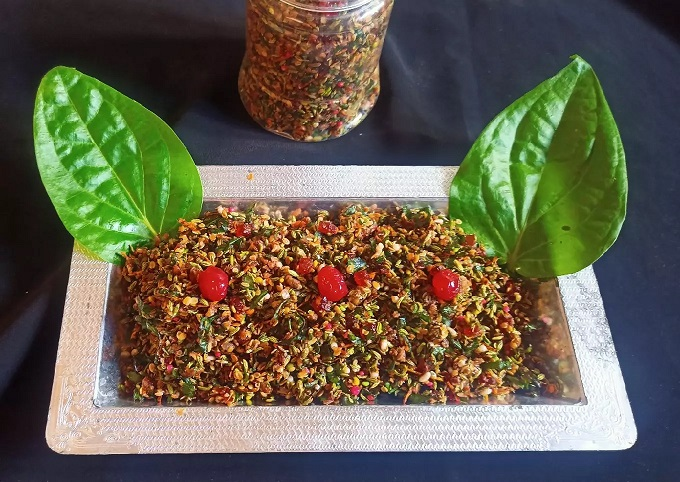
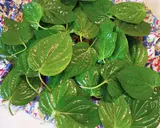
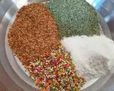
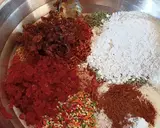
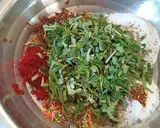
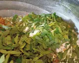
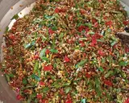
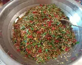
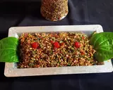

|
|
- કાચી વરિયાળી ¼ કપ
- ધાણાદાળ ¼ કપ
- સફેદ તલ ¼ કપ
- મગતરી બીજ 4-5 ચમચી
- કાજુના ટુકડા 5-6 ચમચી
- બદામ ના કટકા 5-6 ચમચી
- ખારેક પાઉડર ¼ કપ
- ખારેક ના ટુકડા ¼ કપ
|
|
સૌ પ્રથમ પાન ને ધોઈ ને કોરા કરી તેની દાંડી કાઢી, કાતર વડે સમારી લેવા.મોટા વાસણ માં ધાણાદાળ,વરિયાળી,કોપરા નું ખમણ,મીઠી વરિયાળી લેવી.
|  |  |
Step2:
હવે તેમાં સુગંધી,કાથો, સલી સોપારી,મીઠી ચટણી,ઇલાયચી પાઉડર ઉમેરવું.ત્યારબાદ ગુલકંદ,ટુટી ફ્રુટી, દળેલી ખાંડ લેવા.હવે સમારેલા પાન ઉમેરી દો.
|  |  |
ત્યારબાદ ચણોઠી ના પાન અને સિલ્વર બોલ મિક્સ કરી દેવા. બધું બરાબર મિક્સ કરી એક દિવસ એમ જ ઢાંકી ને રાખવું. પછી એર ટાઈટ ડબ્બા માં ભરી ફ્રીઝ માં 1 મહિના સુધી સ્ટોર કરી શકાય છે.
|  |  |
તૈયાર છે પાન મુખવાસ.જમ્યા પછી આવા મસ્ત પણ મુખવાસ મળી જાય તો કોઈ સ્વીટ ની જરૂર નહિ પડે.
|  |  |